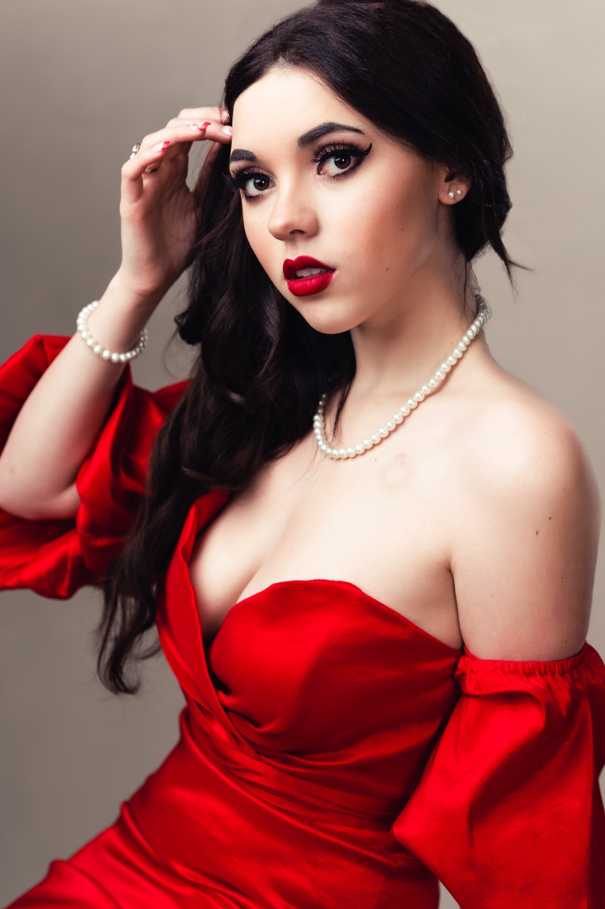
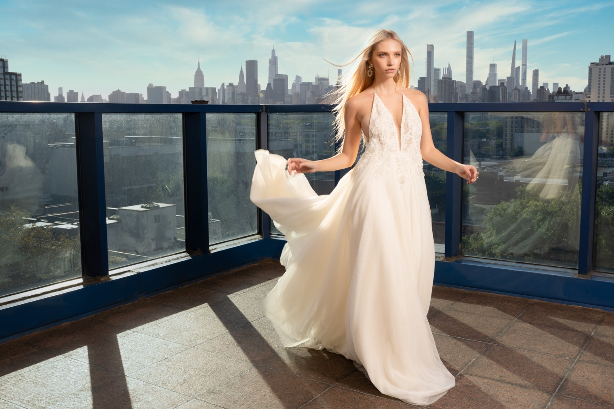

The person beyond the pose
The best part of a portrait session is usually the moment we stop trying so hard.
Read the story
People, ideas, and the things that make me stop and look a little closer.
Explore the journal
The best part of a portrait session is usually the moment we stop trying so hard.
Read the storyFor the unplanned conversation. The long way home. The things that don't fit on a list.
Read the storyI miss when being online felt a little more like visiting someone. Maybe it still can.
Read the storySome thoughts from Minnesota on neighbors, small kindnesses, and taking care of each other.
Read the story